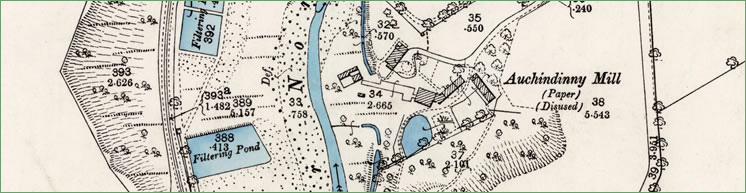

Auchindinny Mill
 |
{kind=link}
Auchindinny Mill was the second mill to be established on the River Esk, probably around 1716. It was known locally as the ‘Brunt Mill’ on account of a disastrous fire in the 1840s which ended its life as a commercial paper mill. Prior to the last fire it had enjoyed over 100 years of growth and development. From 1745 until 1782 William Annandale was successfully making paper there. By 1782 it was being operated by William Cadell, who was one of the founders of the Carron Iron Works at Falkirk, He had married into the Inglis family who owned Auchindinny House and the Mill. In 1824 it installed its first papermaking machine, only the fifth machine in Scotland. It was offered for sale as a paper mill in 1845 but with no other buyers it was eventually taken over by a laundry company. |
Auchindinny Mill Sale. The Scotsman To be sold by public roup, within the Royal Exchange Coffeehouse, Edinburgh, on Wednesday the 28th day of May 1845, at two o’clock afternoon, at the low upset price of £3000. THE Auchindinny PAPER-MILL situated within nine miles of Edinburgh, and one of Pennycuick (sic). The property consists of a Waterfall on the River Esk. of about 21 feet, capable of driving six Paper Engines, with Mill Dam complete, and a very large supply of pure Spring Water, in two ponds, derived from the neighbouring grounds, and from opposite properties by means of pipes. There are many Buildings and much Apparatus necessary for a Paper Mill, and an excellent Managers House, of two Storeys and Attics, with Gardens adjoining. The ground extends, in whole, to about two acres. The Property is held feu for payment of £2, 10s yearly, and part of the spring water is leased at a moderate Rent. The Engine-House and several parts of the work having some years ago been destroyed by fire, require to be renewed; and as the situation possesses every requisite for the erection and carrying on of an extensive Paper Manufactory on the best principles, any person wishing to enter into such a Trade, has here an opportunity of doing so under the most favourable circumstances. The Property will be shown by David Pollock, at the Mill; and for further particulars application may be made to William Cadell & Co., Royal Exchange; to J. & W. R. Kermack, W.S., 20 Broughton Place, Edinburgh; Hugh Rose of Messers Craig & Rose, Drysalters, Leith Walk; or George Gray, W.S., chambers, No 25 North Bridge Street, Edinburgh. |
|||
The King’s Scottish Laundry In 1855 Mr. and Mrs. Cowan of West Calder secured the right to undertake the Laundry work for Queen Victoria when she stayed at Holyrood Palace. They took on the lease of Auchindinny Mill around 1856. The business prospered and by 1905 it was equipped with three steam operated washing machines each capable of washing 650 shirts at a time. It finally closed in the 1960s. |


Penicuik Historical Society :: Penicuik Town Hall :: 33 High Street :: Penicuik :: EH26 8HS
e-mail :: info@penicuikpapermaking.org
e-mail :: info@penicuikpapermaking.org
© Penicuik Historical Society :: site by Wallace Web Design